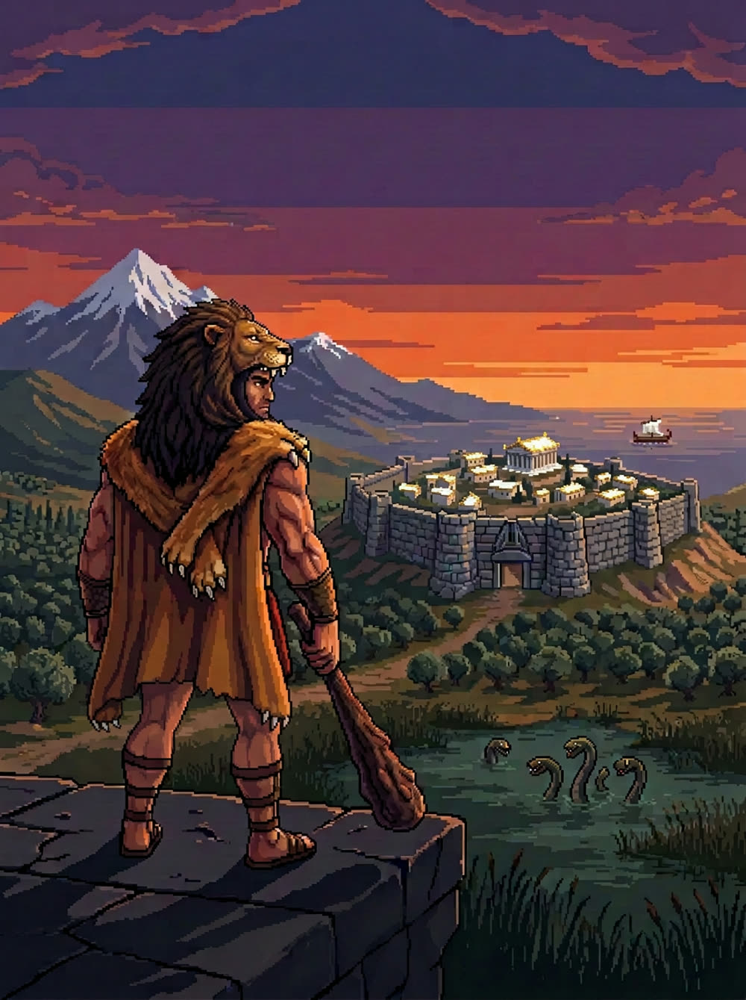
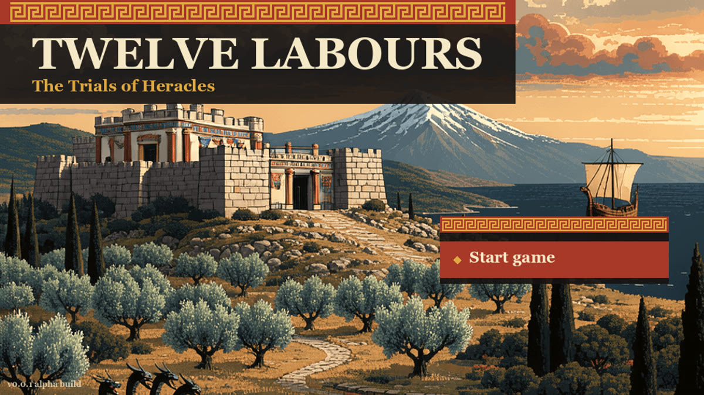
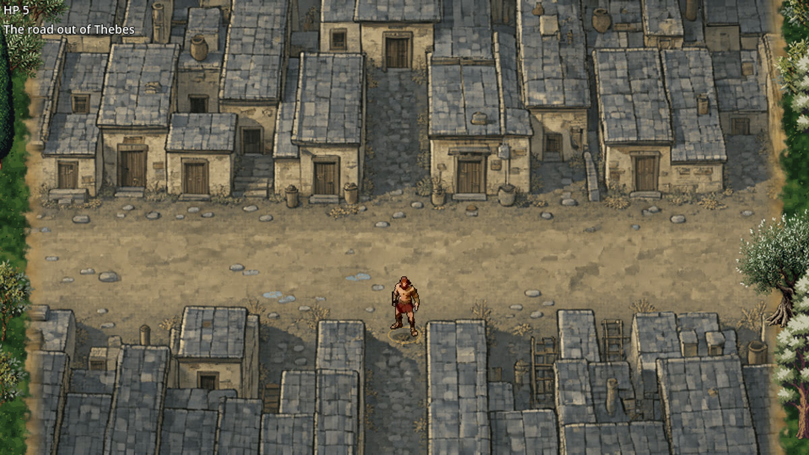
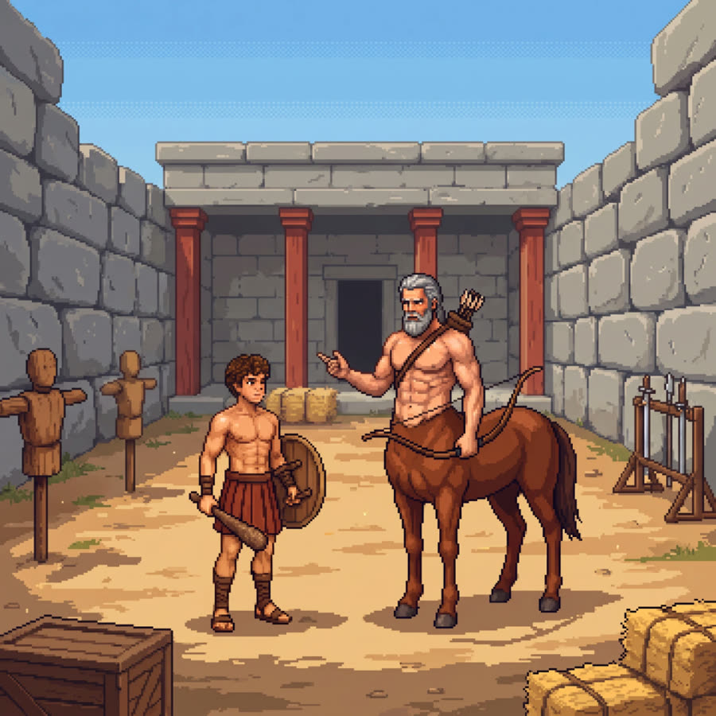
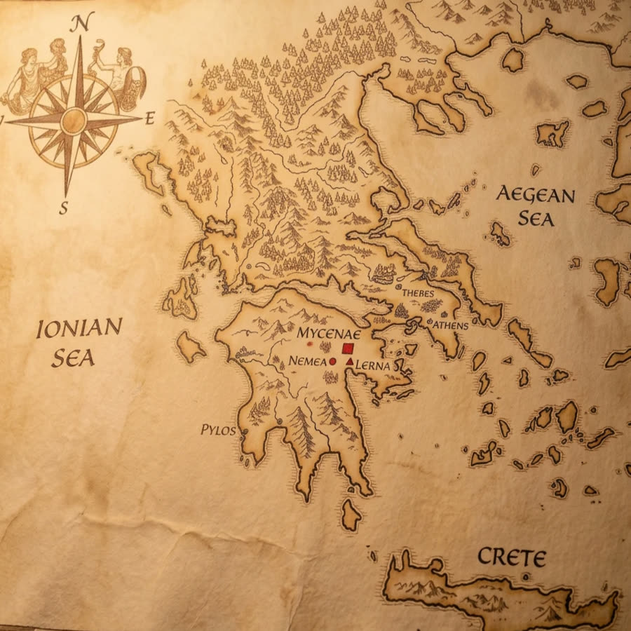
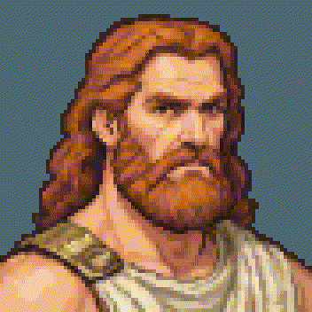

Twelve Labours
A top-down pixel adventure about Heracles and the trials he takes on to atone. It is a passion project I build in my spare time, one labour at a time. One is ready, eleven to go.
Being prepared as a browser game on itch.io. Not on Android yet.

Why Heracles
There was never a canonical version of this character. The ancient sources disagree on the order of the labours and on much of the detail, and every era has retold him its own way. That leaves a lot of room, and I think there is real potential in it.
Heracles is the strongest man alive, and the myth is about what that costs him. The twelve labours are his penance, so I wanted a game where strength is the problem to deal with and not the answer to everything. Twelve trials, each its own place with its own question.
I combine tellings and invent the small scenes that connect them, and I treat every departure as a choice. The setting is the Bronze Age, around the 13th century BCE, with Greek names throughout: Heracles, not Hercules.
The twelve
In the order the myth tells them.
- The Nemean LionReady
- The Lernaean HydraNot yet
- The Ceryneian HindNot yet
- The Erymanthian BoarNot yet
- The Augean StablesNot yet
- The Stymphalian BirdsNot yet
- The Cretan BullNot yet
- The Mares of DiomedesNot yet
- The Girdle of HippolytaNot yet
- The Cattle of GeryonNot yet
- The Apples of the HesperidesNot yet
- CerberusNot yet
Pictures so far
Work in progress. Nothing here is final.





How it is made
A design document first
Before any scene existed there was a written design document, and a set of design rules I reread before adding anything the player sees, hears or touches. The game is built in Godot, and almost everything that can be data (timings, dialogue, layouts) lives in plain files instead of code, so I can change it without touching scripts.
Layout before art
Every place starts as a rough sketch with a mask of where Heracles can walk. The art is made to fit the sketch, and then I measure the finished art and redraw the walkable areas from it, because the art never matches the sketch exactly.
Composed, not painted
Ordinary outdoor screens are assembled in the engine from a library of ground textures and sprites, so the world feels like one place. Fully painted screens are kept for the special ones: arenas, courtyards, the home town and the story plates between scenes.
A checker, and my own eyes
A validation script runs before I call any piece of work done: placement, collisions, missing portraits, file types. Then I look at it. A run with no errors proves the logic, not how a screen looks or feels.
Making it a game
A clear scope
Twelve labours is a big promise, and a myth is not a design. Deciding what is in and what is out, before building anything, was the first real challenge.
Mechanics you can play
A famous story does not tell the player what to do. Turning each episode into something playable, and not just a scene to watch, is the hardest design work.
More than 30 or 40 minutes
I do not want this to be over in half an hour. That takes enough depth in each labour and in the world between them, without padding it out.
Each labour its own challenge
It would be easy to make twelve versions of the same fight with a different monster. Keeping every labour a distinct challenge is tricky.
The pull of fighting
I keep leaning toward fighting. Improving combat as far as I can would make sense, but it runs into the limits of platforms and art, so I keep checking how much weight it should carry.
Quests are hard to scale alone
So I pilot as development goes: finish a labour, see how it plays, and let that shape the next one.
What didn't work at first
Heracles kept changing size
Walking north, running, wading, mid-swing: every animation came out a slightly different size, and fixing it by eye never held. I now measure his silhouette for each move and correct it frame by frame.
Painting every screen
My first plan was one generated painting per location. Edges clashed, the art drifted from the layout and the style changed from screen to screen. That is why most screens are composed now.
The wrong era
The first town came out as a red-roofed suburb with terracotta tiles. The Bronze Age had flat plastered roofs. Someone who loves the myth notices that, so some words in a prompt are now off the table.
One story for two audiences
Someone who knows the myth should recognise it, and someone who has never heard of it should still understand why each scene happens. An early scene dropped a teenager in front of a centaur with no explanation. Now every scene says who, where and why in its first moment, and small markers guide the player instead of instructions on screen.
What I found out
Measure, do not eyeball
Scale, placement and walkable ground all got better the moment I measured them instead of judging by feel.
Layout first makes art disposable
When the sketch comes first, throwing away a bad picture costs one render, not a redesign.
Say less on screen
A small marker for where to go and a short checklist did more than any paragraph of instructions.
Write the lesson down
I keep a file of what went wrong and the rule that prevents it. Every row is something that once cost me a redo.
A note on AI
The art in this game is made with AI generation tools, then processed, laid out and animated by hand in the engine. That was a conscious choice: it lets me build at my own pace and keep control of the output. There was also no guarantee that hand-made art would turn out better, and I am happy with what I get, so I see no reason to change the approach. The concept, the aesthetic and the creative decisions are still mine.
What is next
This is a passion project I work on next to everything else, so I have no timeline for the next steps. The progress bar above is the honest status, and it will move one segment at a time.
For now the game is being prepared to be playable in the browser on itch.io. Whether that happens depends on the final result. It is not on Android yet.
Also in the plans: an arena with waves of enemies, and a local leaderboard.